스팀 · 치지직 연동 방송 도우미 — 실시간 채팅 · 후원 / 미션 관리 · 카테고리 자동 변경
※ 치지직(CHZZK) · 네이버 · 스팀의 공식 프로그램이 아닌 개인이 만든 비공식 도구입니다. (치지직 공식 Open API 사용, 방송 상태 확인만 웹사이트 주소 보조 사용)
D:\BangsongHelper[1/4] Looking for Python... ← 파이썬 찾기 [2/4] Installing Python 3.12.10 ... ← 없을 때만 자동 설치 [3/4] Preparing virtual environment (.venv)... ← .venv 폴더 만들기 [4/4] Installing libraries... ← 라이브러리 설치 Setup complete. Now run run.bat
| 보이는 것 | 해결 |
|---|---|
| Windows의 PC를 보호했습니다 (파란 창) | [추가 정보] → [실행] |
| [ERROR] Python installation failed. | python.org/downloads 에서 직접 설치 (Add python.exe to PATH 체크) → install.bat 다시 실행 |
| [ERROR] Could not download … [ERROR] Library installation failed. | 인터넷 확인 → install.bat 다시 실행 |
| 설치 후 프로그램이 이상하게 꺼짐 | .venv 폴더 삭제 → install.bat 다시 실행 (처음부터 새로 설치) |
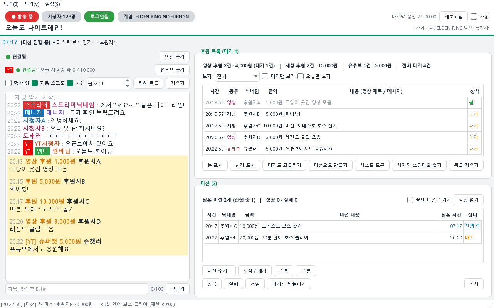
| 위치 | 내용 |
|---|---|
| 색 딱지 (맨 위) | 방송 중(빨강) / 꺼짐 · 시청자 수 · 로그인됨(초록) / 로그인 필요(주황) · 지금 게임 |
| 둘째 줄 | 방송 제목 · 카테고리 |
| [치지직 로그인] | 로그인 안 됐을 때만 표시 |
| [새로고침] · [자동] | 방송 상태 · 게임 다시 확인 (F5) / [자동]: 정해 둔 간격(기본 30초)마다 |
| 왼쪽 | 실시간 채팅 (5장) · 유튜브 채팅 (6장) |
| 오른쪽 위 / 아래 | 후원 목록 (7장) / 미션 & 타이머 (8장) |
| 맨 아래 줄 | 마지막 로그 한 줄 (전체: [보기] → 로그) |
| 메뉴 | 항목 |
|---|---|
| 방송 | 방송 관리 (4장) · 지금 게임으로 카테고리 맞추기 · 새로고침 · 치지직 로그인 / 로그아웃 |
| 보기 | 방송 상태 (치지직 · 스팀) · 게임 짝 (4장) · 로그 |
| 설정 | 키 · ID · 서버 주소 (3장) · 색상 |
※ 메뉴 창은 메인 화면을 막지 않음 → 열어 둔 채로 채팅 보기 가능
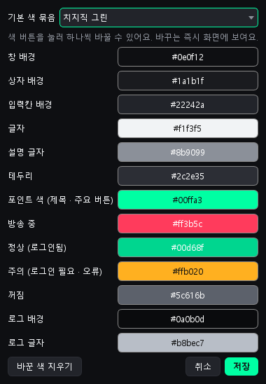
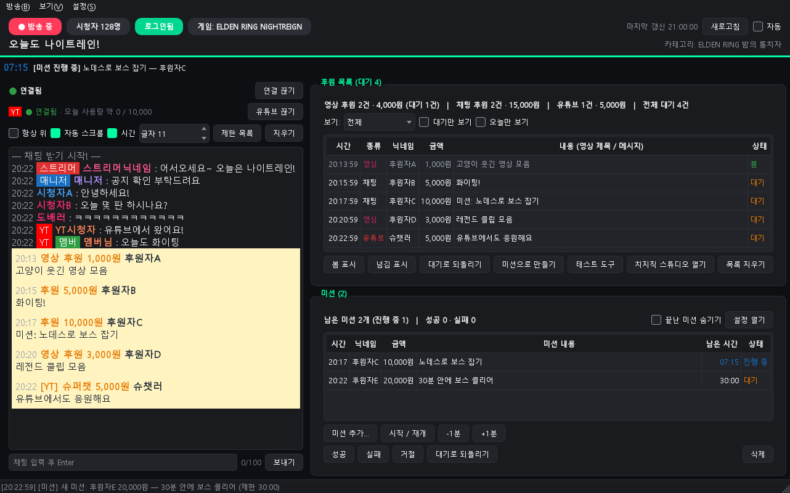
data/init.json 에 저장)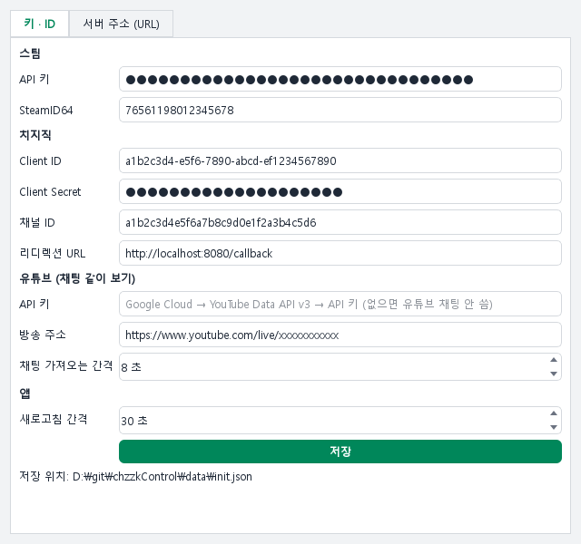
| 칸 | 값 | 얻는 곳 |
|---|---|---|
| 스팀 API 키 | 32자리 (선택) | steamcommunity.com/dev/apikey → Domain Name: localhost → Register |
| SteamID64 | 7656119… 17자리 숫자 | store.steampowered.com/account → 맨 위 'Steam ID' |
| Client ID | 치지직 앱 Client ID | developers.chzzk.naver.com → 애플리케이션 등록 후 앱 화면 ※ 앱 ID · 이름에 chzzk · 치지직 · naver · 네이버 넣지 않기 (등록 불가 · 정지될 수 있음) |
| Client Secret | 치지직 앱 Client Secret | 위와 같은 화면 — 절대 공개 금지 |
| 채널 ID | 내 방송국 주소 뒤 32자리 | chzzk.naver.com/ 뒤 부분 |
| 리디렉션 URL | http://localhost:8080/callback | 기본값 그대로 (개발자 센터 등록 주소와 똑같이) |
| 유튜브 API 키 | Google Cloud API 키 (선택) | console.cloud.google.com → 6장 |
| 유튜브 방송 주소 NEW | 유튜브 방송 주소 (선택) | https://www.youtube.com/live/… → 6장 |
※ 스팀 API 키 없음 → 스팀 게임 감지 안 함, 실행 중인 프로그램으로만 감지
http://localhost:8080/callback| 권한 | 쓰이는 곳 |
|---|---|
| 채널 · 라이브 · 카테고리 조회 | 방송 상태, 카테고리 검색 · 자동 짝 찾기 |
| 방송 설정 조회 / 변경 | 제목 · 카테고리 바꾸기 |
| 채팅 메시지 조회 | 실시간 채팅 |
| 채팅 메시지 쓰기 · 채팅 공지 등록 | 채팅 보내기 · 공지 · 메시지 가리기 |
| 후원 조회 | 후원 목록 · 미션 자동 등록 (없으면 후원 0건) |
| 활동제한 쓰기 / 조회 | 임시 제한 · 활동 제한 · 제한 목록 |
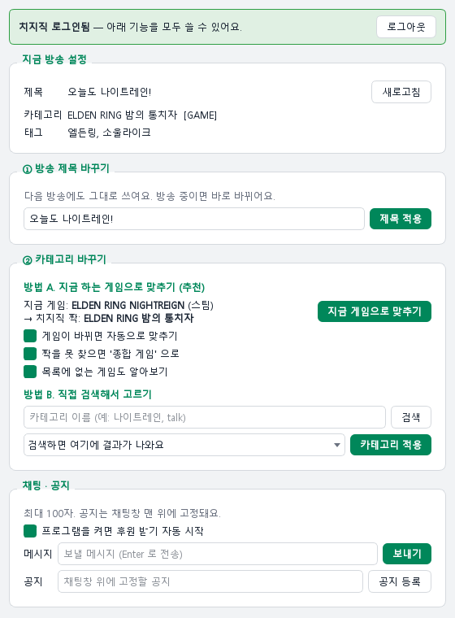
| 방법 | 내용 |
|---|---|
| 스팀 | 스팀 '플레이 중' 게임 (게임 PC ≠ 방송 PC 여도 됨) |
| 실행 중인 프로그램 | 스팀 밖 게임 (롤 · 발로란트 · 메이플 · 로아 · 오버워치 · 디아블로 4 등) — exe 이름으로 |
| 게임 설치 폴더 | 에픽 · 넥슨 · 엑스박스 · 라이엇 · GOG 등 설치 폴더의 프로그램 → 창 제목으로 검색 (런처 · 업데이트 · 안티치트 제외) |
| 무시 | Wallpaper Engine · OBS Studio · Crosshair X · Bongo Cat |
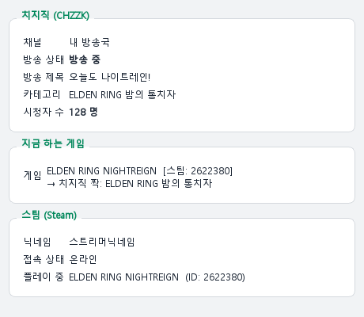
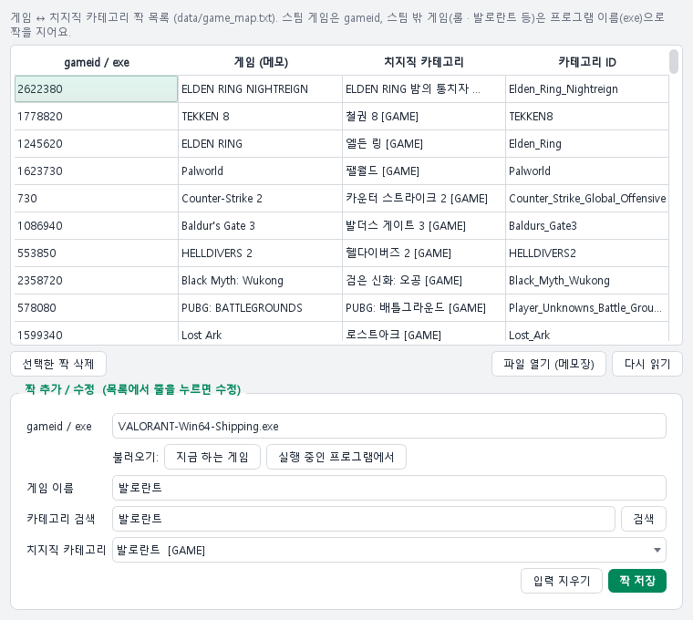
| 기능 | 내용 |
|---|---|
| 실시간 채팅 | 스트리머 / 매니저 딱지 · 닉네임별 색 · 후원은 노란 줄 |
| 채팅 보내기 | 아래 칸 입력 → Enter (100자) |
| 보기 옵션 | 항상 위 · 자동 스크롤 · 시간 · 글자 크기 · 지우기 |
| 연결 | [연결 / 연결 끊기] · 끊기면 자동 재연결 (3초 → 6초 → … 최대 60초) |
| 미션 타이머 줄 | 채팅 위에 진행 중 미션 항상 표시 (8장) |
| 크기 조절 | 경계선(가운데 세로 · 오른쪽 가로) 끌기 |
| 창 제목 | '방송 도우미 (대기 3 · 미션 2)' → 작업 표시줄에서도 확인 |
YouTube Data API v3 → 사용YouTube Data API v3 만 허용https://www.youtube.com/live/xxxxxxxxxxx) → [저장]@채널이름 도 가능 — 단, 찾을 때 100점 사용 → 방송 주소 권장| 기능 | 내용 |
|---|---|
| 봄 · 넘김 · 대기로 되돌리기 | 여러 줄 한 번에 · 더블클릭 = 대기 ↔ 봄 · 끝난 줄은 흐리게 |
| 보기 | 전체 / 영상 / 미션 / 채팅 · 대기만 · 오늘만 |
| 합계 | 영상 · 채팅 · 유튜브 건수와 금액, 대기 건수 |
| 미션으로 만들기 | 고른 후원 → 미션 등록 (8장) |
| 치지직 스튜디오 열기 | 영상 재생 · 건너뛰기는 스튜디오에서 |
| 저장 | data/donations.json — 껐다 켜도 유지 (최근 3000건) |
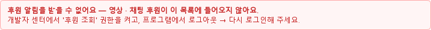
※ 치지직 API 한계: 영상 후원은 제목만 (주소 · 재생 제어 없음) / 꺼져 있던 동안의 후원은 못 가져옴
미션: 노데스로 보스 잡기, [미션] 30분 안에 클리어data/missions.json 저장 (타이머도 이어짐)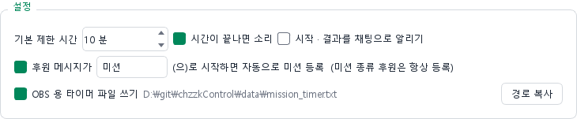
기본 제한 시간 · 끝나면 소리 · 시작 / 결과 채팅 알림 · 자동 등록 단어(기본 "미션") · OBS 타이머 파일
data\mission_timer.txt[미션] 노데스로 보스 잡기 - 후원자C 07:17 1초마다 갱신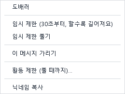
| 메뉴 | 내용 |
|---|---|
| 임시 제한 | 잠깐 채팅 금지 (시간은 치지직이 정함: 30초 → 60초 …) |
| 임시 제한 풀기 | 바로 해제 |
| 이 메시지 가리기 | 그 채팅 한 줄 가리기 |
| 활동 제한 (풀 때까지) | 한 번 더 확인 후 제한 |
| 닉네임 복사 | 클립보드로 |
— 도배러 님을 임시 제한했어요 —)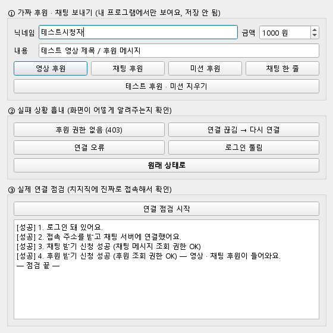
| 보이는 것 | 해결 |
|---|---|
| 치지직 로그인이 필요해요 | 맨 위 [치지직 로그인] |
| 오류 + 403 (채팅 메시지 조회) | '채팅 메시지 조회' 권한 체크 → 로그아웃 → 다시 로그인 |
| 빨간 경고: 후원 알림 못 받음 | '후원 조회' 권한 체크 → 로그아웃 → 다시 로그인 (테스트 도구 ③으로 확인) |
| 다시 연결 대기 | 인터넷 잠깐 끊김 → 자동 재연결 (로그인 유지) |
| [YT] 방송 주소를 넣어 주세요 | [설정] → 유튜브 → 방송 주소 입력 · 저장 → [유튜브 연결] |
| 카테고리가 '종합 게임' 으로 | 치지직에 카테고리 없음 → [방송] → 지금 게임으로 맞추기 / [보기] → 게임 짝 |
| 게임을 못 알아봄 | 스팀 프로필 · 게임 세부 정보 공개 확인 / 스팀 밖 게임: [보기] → 게임 짝 → [실행 중인 프로그램에서] |
| 안 되는 것 | 대신 |
|---|---|
| 영상 후원 재생 · 건너뛰기 · 광고 넘기기 | 치지직 스튜디오에서 직접 |
| 영상 후원의 영상 주소 | 제목만 제공 |
| 미션 후원 따로 받기 | "미션"으로 시작하는 후원 자동 등록 (8장) |
| 지난 후원 내역 | 프로그램이 받은 것만 저장 → '후원 받기 자동 시작' 켜 두기 |
| 임시 제한 시간 정하기 | 치지직이 정함 (30초 → 60초 …) |
| 파일 | 내용 |
|---|---|
init.json | 설정 · 키 · 토큰 · 색상 — 키 넣은 뒤엔 공유 · 업로드 금지 |
game_map.txt | 게임 ↔ 카테고리 짝 (메모장으로 수정 가능) |
donations.json · missions.json | 후원 · 미션 기록 (시청자 닉네임 포함 → 공유 금지) |
youtube_quota.json | 유튜브 오늘 사용량 |
mission_timer.txt | OBS 용 미션 타이머 글자 |
run.bat status · run.bat sync-game · run.bat chat "안녕하세요" … (목록은 README.md)